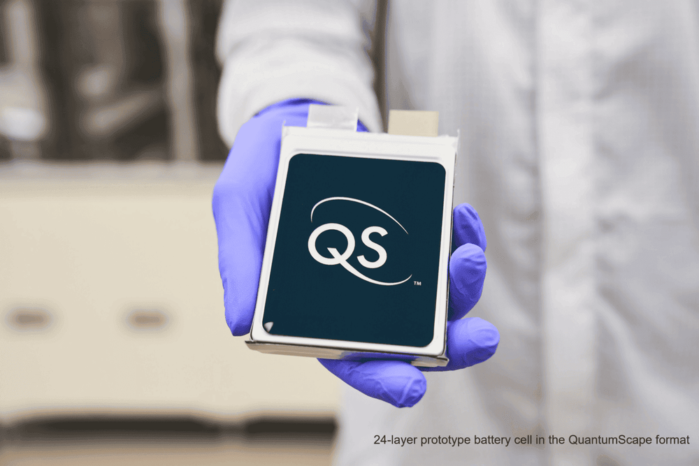
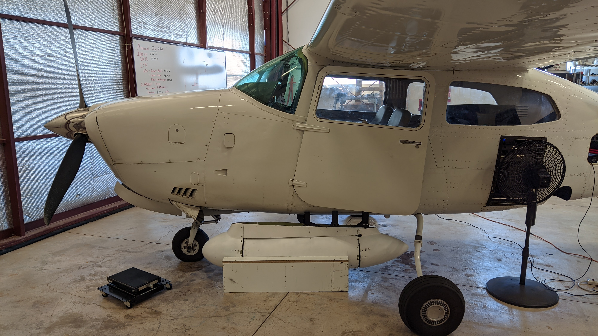

Mechatronics & Aerospace Engineer | Rapid Prototyping & Design
Mechatronics and aerospace engineer with extensive experience in robotics, CAD, and prototyping.
Currently on the internal tools & test team at JUUL labs.
Previously implemented inspection and metrology systems for solid-state lithium batteries.
Also developed modular cargo robotics for autonomous last-mile delivery vehicles
and a gigapixel-class aerial Wide Area Motion Imaging (WAMI) system.
Currently based in San Francisco, CA
On the internal tools & test team at JUUL Labs, I engineered a UR10e robotic work cell using ROS2/MoveIt and Intel RealSense for automated aerosol-chemistry testing, built an AI-driven session-analysis pipeline (Python, SQL, ML), integrated FTIR/mass-spec instruments, and designed custom Altium PCBs and nitinol-actuated test fixtures.
Project Details All Projects
At QuantumScape I implemented cleanroom linescan camera systems and computer-vision defect-detection algorithms (>75% recall & precision) for solid-state battery electrode inspection, reducing manual review burden and accelerating production yield analysis.
Project Details All ProjectsAs a senior mechatronics engineer, I designed, built, and tested the uPod, a 4000lb & 340ft³ modular robotic cargo storage platform for an autonomous electric delivery vehicle. (Shown at 4x speed)
Project Details All Projects
As a mechatronics engineer, I prototyped a modular, aircraft-mounted gigapixel-class Wide Area Motion Imaging (WAMI) system enclosed in an aerodynamic composite pod.
Project Details All Projects